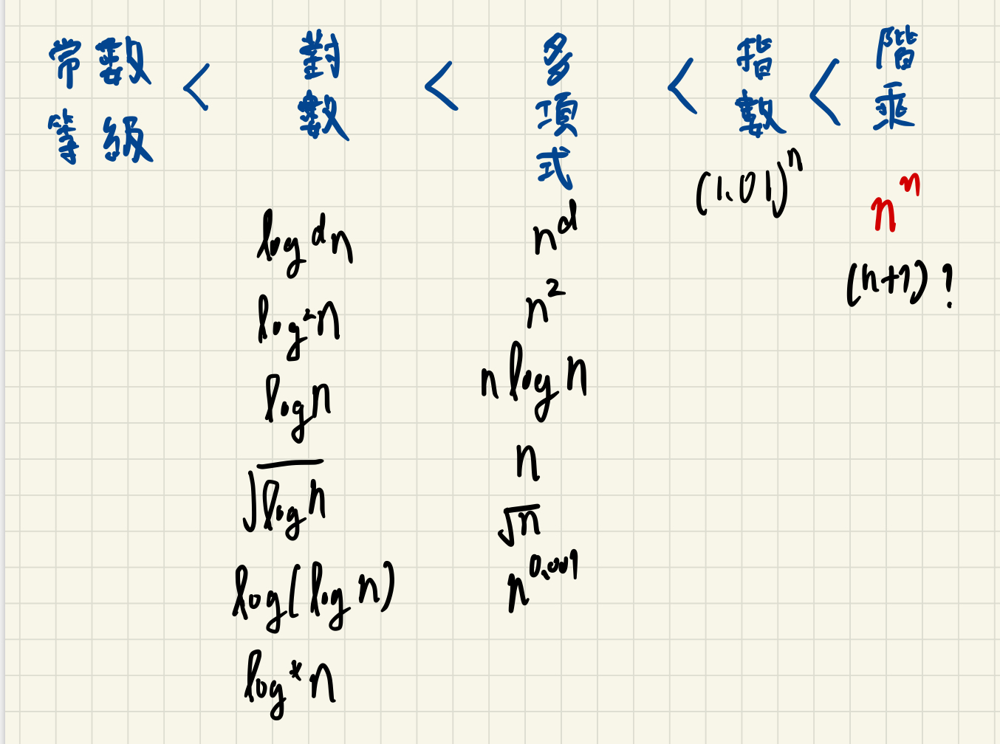

常用的數學公式
等差數列公式：
x=2(首項+尾項)×項數.
等比數列公式：
1−rx=最後一項×(1−rn)
∑i=1∞12+22+32+....+n2=
6n×(n+1)×(2n+1)
∑i=1∞id 約莫是 nd+1
- 調和數列 ∑n=1∞i1=11+21+31+....+n1=logn
階乘系列
- n!=1×2×3...n ≤n×n×....×n,∀n≥1
- n!≥(n/2)(n/2)
Growth rate

Big-oh:O
f(n)=O(g(n))⇔ exists two positive constant c and n0